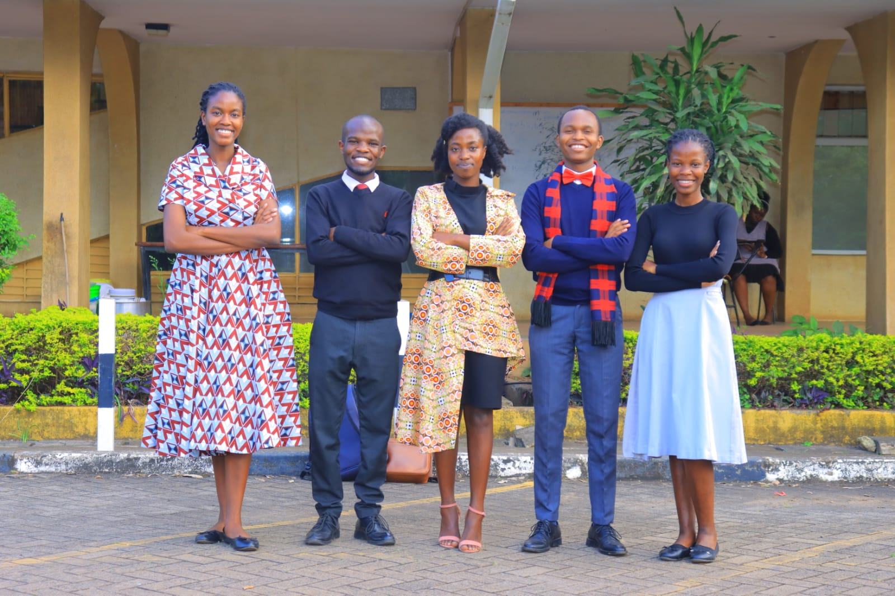
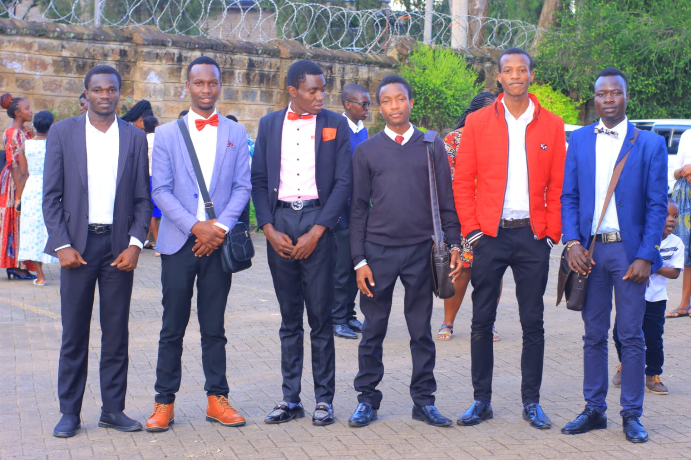
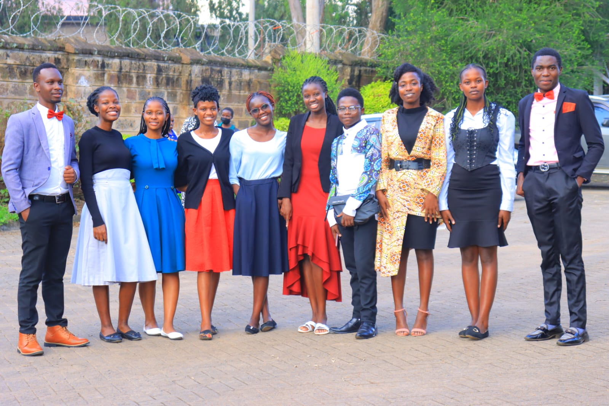
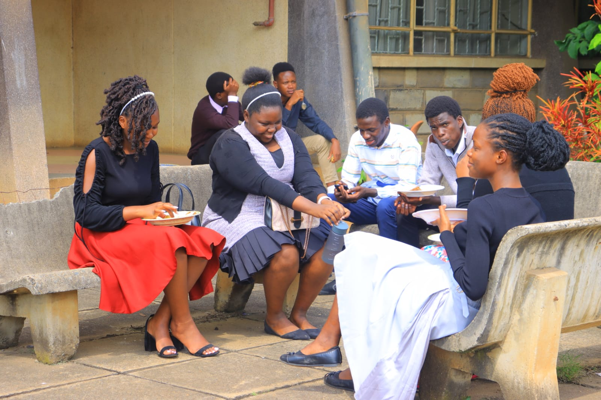

The UoNSDA LUNCH KITTY-Contribution Details.

- As we continue to grow in faith and fellowship, let us also come together in love and generosity by supporting our lunch kitty. Contributing to this initiative not only ensures that we share a meal but also strengthens our bond as a church family. A simple act of giving can make a big difference in fostering unity and allowing everyone to fully participate in our worship experience without concerns about meals. Let’s give cheerfully and make our fellowship even more meaningful! Together, let’s fill hearts and plates with God’s love!



